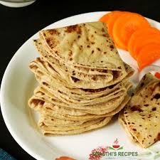

Chappati

Description:
Chappati is a type of Indian flat bread that is consumed on a daily basis by a large percentage of Indians, typically in the form of dinner. Chappati is generally consumed with an accompanying curry, such as dal or chutneys.
Ingredients
Steps
-
Mix the flour and water together to form a dough.
- Take a small amount of dough, knead it in a small amount of flour to prevent stickiness and turn it into a flat circular sheet by rolling.
- On a hot pan, add a small amount of oil and the sheet of flour and let it stay until bubbles start to appear on the surface of the chappati.
- Flip the chappati and let it stay for the same amount of time
- Take it out and make more chappatis if needed! Enjoy them with a curry!